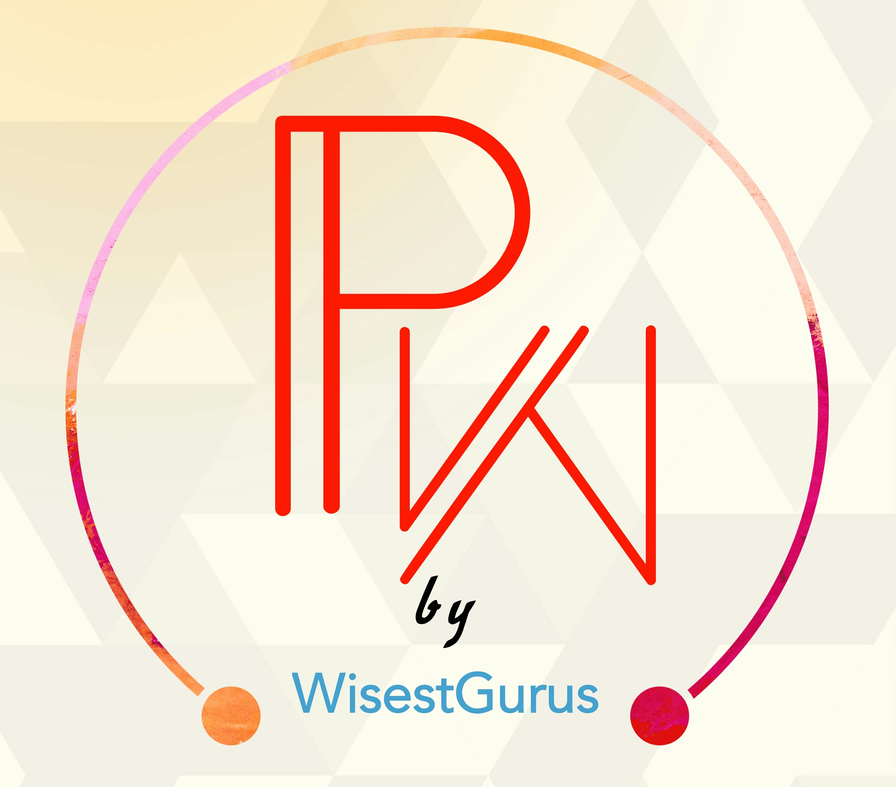

<mat-toolbar>

    <button mat-icon-button>
        <mat-icon class="fab fa-github"></mat-icon>
    </button>

    <button mat-icon-button>
        <mat-icon class="fab fa-slack text-warning"></mat-icon>
    </button>

    <button mat-icon-button>
        <mat-icon class="fab fa-facebook-f text-primary"></mat-icon>
    </button>

    <button mat-icon-button>
        <mat-icon class="fab fa-instagram text-danger"></mat-icon>
    </button>

    <button mat-icon-button>
        <mat-icon class="fab fa-twitter text-info"></mat-icon>
    </button>

</mat-toolbar>

<wg-search *ngIf="isHandset$ | async"></wg-search>

<mat-nav-list>

    <div>
        <mat-accordion>
            <mat-expansion-panel routerLinkActive='active' *ngFor='let mainNavItem of mainNavItems'
                class="mat-elevation-z0">

                <mat-expansion-panel-header class="panel-text">
                    {{ mainNavItem.name }}
                </mat-expansion-panel-header>

                <a *ngFor='let link of mainNavItem.links' routerLinkActive='active' [routerLink]='[link.path]'
                    mat-list-item disableRipple (click)='closeSideNav()' class="panel-text">{{link.name}}</a>

            </mat-expansion-panel>

            <br />

            <div *ngIf='navItems'>
                <mat-expansion-panel routerLinkActive='active' class="mat-elevation-z0">
                    <mat-expansion-panel-header> {{navItems.header}} </mat-expansion-panel-header>
                    <a mat-list-item (click)='closeSideNav()' *ngFor='let navItem of navItems.links'
                        [routerLink]='[navItem.path]' routerLinkActive='active' disableRipple>{{navItem.name}}</a>
                </mat-expansion-panel>
            </div>
        </mat-accordion>
    </div>
</mat-nav-list>